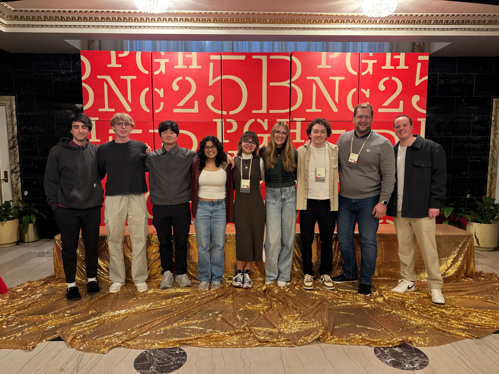
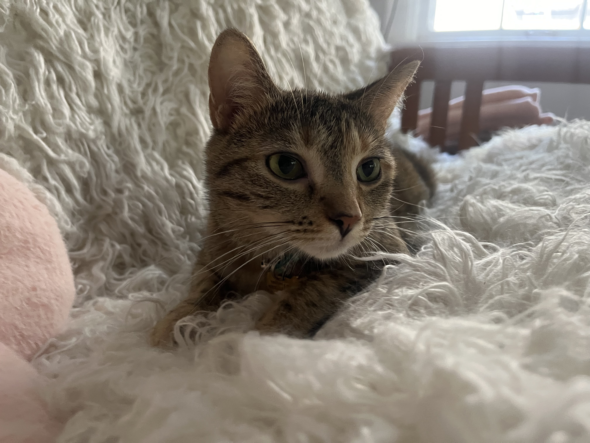
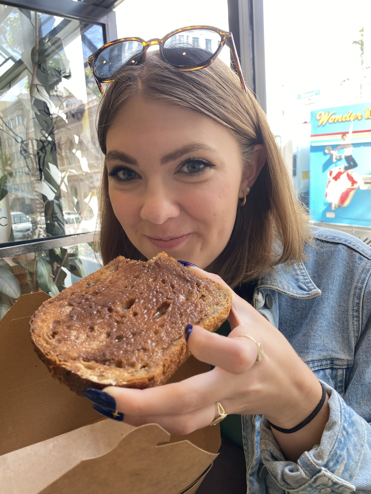

I'm Isabel Nixon (you can call me Bel!), a multidisciplinary designer. I am a forward thinker passionate about the prevalence and evolution of technology in the modern world.
I am at a unique crossroads with my interests—as a creative writer, I pride myself on being able to see the big picture and know what stories need to be told through design and strategy. As someone studying computer science, I am able to use the logic of the technology that surrounds us to improve human and computer interactions. As a designer, I aim to merge all of these goals in an ethical and masterful way.
Outside of design and being unnaturally serious in my bio, I'm an avid music lover and audiophile. I curate music on Spotify like nobody's business and love analyzing the intricacies of music in today's sphere. I'm also a big reader and writer and love spending time with my cat (though she might disagree with me).


